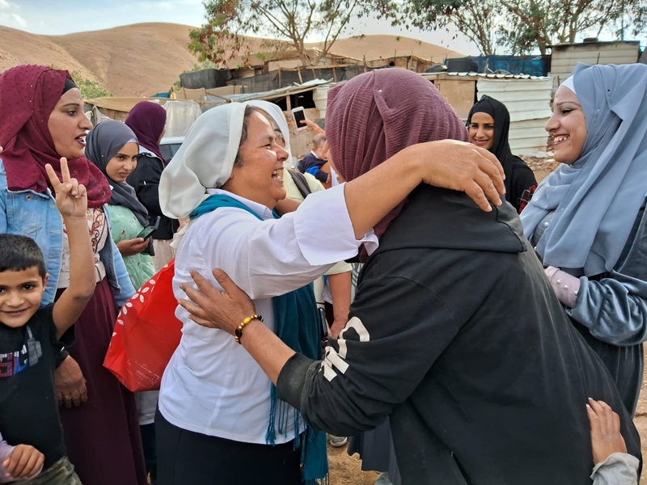
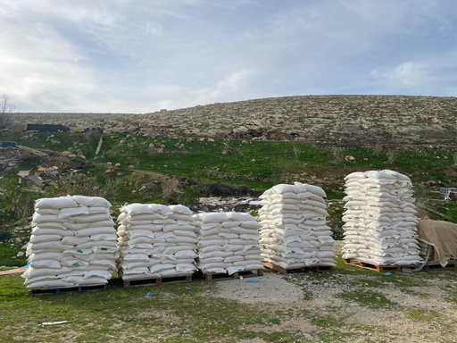
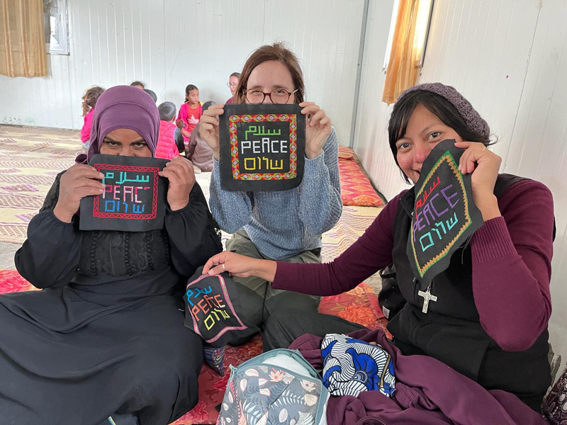
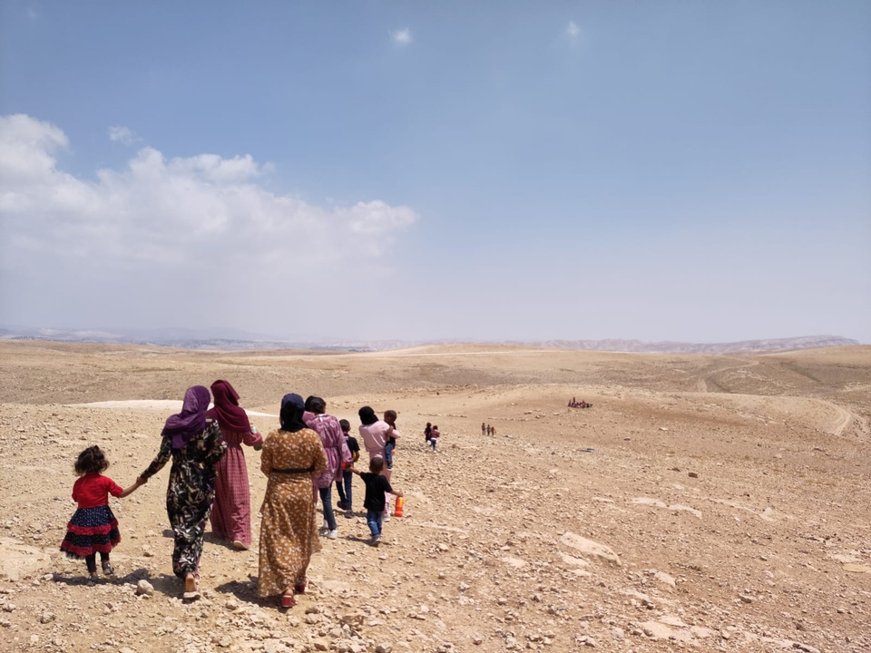

I shall take her to the
DESERT
ACCOMPANYING BEDOUIN COMMUNITIES
Lent - Spring 2024

Presence of God
in the Desert
in the Desert
With the onset of Lent, we reach out to you as a voice from the desert. Throughout this time, we have felt upheld as we stand in solidarity with the suffering communities in the West Bank. Your prayers, solidarity, and affection mean the world to us. In this edition, we will share the initiatives we have undertaken, with heartfelt thanks to God and your unwavering support.
In his Lenten message, Pope Francis speaks of the desert as a mystical place. Its ancestral inhabitants, the Bedouins, know of its beauty and harshness. Their resilience is inspiring. Life in the desert has strengthened them. They have little, and their needs are few. They withstand extreme weather conditions. They know how the flowers feel when they are “pushed and pelted”. As the poet Robert Frost says, “the rain and wind smote the garden bed that the flowers actually knelt, and lay lodged - though not dead.” The harshness of the desert brings unveils their vulnerability and resilience. They believe and hope even in periods of great aridity and drought. They possess an admirable capacity to recover and adapt in the face of adversity, projecting themselves into the future in a constructive and hopeful manner. They strive. They cling to the thread of hope that their heritage and faith provide them.
The solitude and grandeur of the desert reveal profound truths. It is there that God speaks to the heart. The Pope echoes two existential questions: "Where are you?" (Genesis 3:9) and "Where is your brother?" (Genesis 4:9). Amid challenges, adversities, and conflict, we feel privileged to share the journey with strong and resilient women in the Holy Land. We are inspired by the Pope's words: "Faith and charity lead hand in hand to this small hope. They teach it to walk, and at the same time, it is she who pulls them forward." Present on both sides of the wall, through service, encounters, visits, education, and training of women and children, we want to contribute to forging paths of peace and weaving hope in this Holy Land. That's why we are here. Thank you for your support and solidarity, and HAPPY EASTER!
The solitude and grandeur of the desert reveal profound truths. It is there that God speaks to the heart. The Pope echoes two existential questions: "Where are you?" (Genesis 3:9) and "Where is your brother?" (Genesis 4:9). Amid challenges, adversities, and conflict, we feel privileged to share the journey with strong and resilient women in the Holy Land. We are inspired by the Pope's words: "Faith and charity lead hand in hand to this small hope. They teach it to walk, and at the same time, it is she who pulls them forward." Present on both sides of the wall, through service, encounters, visits, education, and training of women and children, we want to contribute to forging paths of peace and weaving hope in this Holy Land. That's why we are here. Thank you for your support and solidarity, and HAPPY EASTER!
That they may be satisfied...
IN THEIR THIRST FOR HUNGER AND JUSTICE
- "We didn't have anything to eat today. We had run
out of everything. This is a blessing!"
- "I was very ill in the hospital. No money left for food. Neither my husband nor my children are working. Thank you, thank you for remembering us."
- "I wish the people of Gaza could also receive food like us."
We heard comments like these from women and Bedouin leaders as they received food supplies for their families.
In solidarity with the Bedouins of the West Bank, a, group of friends, primarily from Italy and Spain, contributed so that Bedouin families could have food on the table.
For the Bedouins in Palestine, the situation was already challenging before October 7th. But since that date, the situation has deteriorated even further. The closure of roads and the increase in checkpoints, especially in Palestinian territory, has caused many to lose their jobs and income. They are prohibited from building, traveling, and denied life opportunities. In a central location, amidst the open expanse near one of the Bedouin villages, the food distribution unfolded. Leaders promptly gathered, prepared to ferry the provisions to their village families. The distribution proceeded smoothly and efficiently, following Bedouin customs, all within a single morning. Prior to this, a Bedouin leader reached out to the heads of the 14 villages, assessing the needs of their communities.
- "I was very ill in the hospital. No money left for food. Neither my husband nor my children are working. Thank you, thank you for remembering us."
- "I wish the people of Gaza could also receive food like us."
We heard comments like these from women and Bedouin leaders as they received food supplies for their families.
In solidarity with the Bedouins of the West Bank, a, group of friends, primarily from Italy and Spain, contributed so that Bedouin families could have food on the table.
For the Bedouins in Palestine, the situation was already challenging before October 7th. But since that date, the situation has deteriorated even further. The closure of roads and the increase in checkpoints, especially in Palestinian territory, has caused many to lose their jobs and income. They are prohibited from building, traveling, and denied life opportunities. In a central location, amidst the open expanse near one of the Bedouin villages, the food distribution unfolded. Leaders promptly gathered, prepared to ferry the provisions to their village families. The distribution proceeded smoothly and efficiently, following Bedouin customs, all within a single morning. Prior to this, a Bedouin leader reached out to the heads of the 14 villages, assessing the needs of their communities.
"Every family is in need," echoed the majority. A total of 350 families across 16 villages were served. Each household received a sack containing 20 kilograms of flour, 10 kilograms of sugar, 10 kilograms of rice, two liters of pure olive oil, and a jar of peanut butter cream—essential staples for Bedouin families. Provisions were allocated based on family count, with some villages receiving 50 and others 7 distributions.



These provisions represent solidarity in action.
“You are not alone. Many people stand with you in
prayer and support”. We communicated this to the
women in the embroidery and English groups, as
well as the mothers of the children from the
kindergartens, when they expressed their gratitude.
In the days leading up to this, accompanied by a
Bedouin leader, Lulu and I traveled to Tubas, near
Jenin, to seek more affordable prices from
Palestinian suppliers in the northern region of the
country—a land both fertile and troubled.
Our goal was to ensure that nothing went to waste. We aimed for the generous donations of so many kind-hearted individuals to be maximized in their impact, reaching the greatest number of people possible.
We still hold a shared desire. Just as food distribution was made possible for Bedouin communities, may humanitarian aid also reach Gaza and all those facing hunger.
Our goal was to ensure that nothing went to waste. We aimed for the generous donations of so many kind-hearted individuals to be maximized in their impact, reaching the greatest number of people possible.
We still hold a shared desire. Just as food distribution was made possible for Bedouin communities, may humanitarian aid also reach Gaza and all those facing hunger.
-"What a wonderful gift! My husband hasn't been able to
work since the beginning of the war. Thank you, thank
you," expressed a Bedouin woman.
We are overjoyed to see that we were finally able to carry out this initiative, thanks, just like that day, to those who offered loaves and fishes. Could this be the same feeling as those who ate until they were satisfied when Jesus multiplied the bread?
In our hearts, a prayer of gratitude swells for the immense display of generosity from so many dear people. We also hold the fervent desire that hungry communities may find satisfaction and that hunger-related deaths may cease. Our hearts ache for Sudan, Gaza...
-"We have been eating hubaza (a dish made with wild herbs that Bedouins consume) during this time. At least we have this. But the people of Gaza don't even have access to that. Not even to clean water," remarks one of the Bedouins.
There was a profound sense of gratitude. Nevertheless, in the depths of our souls, there is a prayer for the war to end, for acts of solidarity to proliferate, and for those who hunger and thirst for both bread and justice to be satiated.
We are overjoyed to see that we were finally able to carry out this initiative, thanks, just like that day, to those who offered loaves and fishes. Could this be the same feeling as those who ate until they were satisfied when Jesus multiplied the bread?
In our hearts, a prayer of gratitude swells for the immense display of generosity from so many dear people. We also hold the fervent desire that hungry communities may find satisfaction and that hunger-related deaths may cease. Our hearts ache for Sudan, Gaza...
-"We have been eating hubaza (a dish made with wild herbs that Bedouins consume) during this time. At least we have this. But the people of Gaza don't even have access to that. Not even to clean water," remarks one of the Bedouins.
There was a profound sense of gratitude. Nevertheless, in the depths of our souls, there is a prayer for the war to end, for acts of solidarity to proliferate, and for those who hunger and thirst for both bread and justice to be satiated.
Forging Paths of Peace
Education and Hope in
Bedouin Villages
Bedouin Villages
The majority of women, young girls, and children from the 14 villages we regularly visit actively participate in the English and embroidery courses we offer. We engage in playful activities with them, as they learn through play and laughter. Laughter, in itself, is both contagious and therapeutic, bringing us immense joy to witness their happiness and smiles. Our aim is to provide support to the five kindergartens and various groups of women, young girls, and children eagerly anticipating class time. Since October 7th, these kindergartens have stood as the sole operational schools for Bedouins. These kindergarten facilities serve as safe havens, palpable in the comfort the children feel within them.
Utilizing recycled materials, Bedouin teachers are dedicated to fostering innovative forms of learning. These Bedouin teachers and the mothers may well serve as the cornerstone for cultivating a culture of peace in future generations.
Utilizing recycled materials, Bedouin teachers are dedicated to fostering innovative forms of learning. These Bedouin teachers and the mothers may well serve as the cornerstone for cultivating a culture of peace in future generations.

Volunteers in Action
WHAT I HAVE KNOWN ON THIS JOURNEY IN PALESTINE
I am a retired Italian doctor, 64 years old. In January 2024, with the ongoing war, I came to live for a month with the Comboni Sisters in Jerusalem and Bethany. I wanted a break away from home, I wanted to do something useful, and I wanted to pray for peace in the midst of the conflict.
Jerusalem, the Bedouins, the Palestinians, the desert, the biblical environment, the Comboni Sosters, faith...
Jerusalem is the most fascinating city I have ever seen. Wonderful, surprising sites await around every corner. Bells and muezzins' calls can be heard, various languages spoken, and people of diverse backgrounds seen. It's exotic yet familiar, rugged. The privilege of visiting now, without tourists, is immense.
The Bedouins were a real surprise. I believe there is no other reality so closely linked to the Bible, both geographically and culturally. They were deported from the Negev Desert and forced to live in miserable huts, abandoning their nomadic way of life. Nevertheless, they maintain their dignity in attire, hospitality, cuisine, and to the extent possible, housing. Community life is a reality, especially for children who are well-educated with both affection and strictness, appearing happy, always affectionate and welcoming. For women, who marry very young and the pressure to have their first baby. Bedouins practice polygamy.
Jerusalem is the most fascinating city I have ever seen. Wonderful, surprising sites await around every corner. Bells and muezzins' calls can be heard, various languages spoken, and people of diverse backgrounds seen. It's exotic yet familiar, rugged. The privilege of visiting now, without tourists, is immense.
The Bedouins were a real surprise. I believe there is no other reality so closely linked to the Bible, both geographically and culturally. They were deported from the Negev Desert and forced to live in miserable huts, abandoning their nomadic way of life. Nevertheless, they maintain their dignity in attire, hospitality, cuisine, and to the extent possible, housing. Community life is a reality, especially for children who are well-educated with both affection and strictness, appearing happy, always affectionate and welcoming. For women, who marry very young and the pressure to have their first baby. Bedouins practice polygamy.
Dominated by a sky of striking beauty, the arid desert blossoms after rain, adorned with flowers of many colors... It would truly be sad if such richness, enduring for millennia, were destroyed.
The Palestinians are the Arabs who live in this land, both nomadic and settled. They are subject to a harsh regime but seem to possess great resilience. I believe their ancient culture helps them resist, and the warmth of family bonds strengthens the children. Their legendary hospitality is real. Palestinians are primarily Muslims, but also Christians (Catholics, Orthodox, Copts...). The tragedy of Gaza is just the latest in a long and painful history of oppression and injustices endured. Will they continue to withstand the continuous attacks that threaten to destroy their culture, rich in values and teachings that are relevant for us today as well?
The desert is a place full of charm; especially the light, the sunrise, and the sunset, are of a beauty never seen before. The sky, usually clear but also stormy; the torrential rain and then the rainbow; the grass and flowers that grow in a day; the numerous animals, goats and sheep, donkeys, camels... A wonder!
The Palestinians are the Arabs who live in this land, both nomadic and settled. They are subject to a harsh regime but seem to possess great resilience. I believe their ancient culture helps them resist, and the warmth of family bonds strengthens the children. Their legendary hospitality is real. Palestinians are primarily Muslims, but also Christians (Catholics, Orthodox, Copts...). The tragedy of Gaza is just the latest in a long and painful history of oppression and injustices endured. Will they continue to withstand the continuous attacks that threaten to destroy their culture, rich in values and teachings that are relevant for us today as well?
The desert is a place full of charm; especially the light, the sunrise, and the sunset, are of a beauty never seen before. The sky, usually clear but also stormy; the torrential rain and then the rainbow; the grass and flowers that grow in a day; the numerous animals, goats and sheep, donkeys, camels... A wonder!
The Comboni Sisters were indeed a pleasant surprise. I had never encountered such a modern order before. Their robust faith is nurtured by regular prayer and active, effective charity work. Proficient in at least four languages, they swiftly cross cultural boundaries, responding to wherever there is need. Rather than focusing on themselves, they prioritize the needs of the most vulnerable. They dress modestly, exude kindness, and strive to connect with everyone they encounter. I also deeply appreciated their support for priests and other consecrated individuals. Through them, I feel the grace of God in action.
How has this experience enriched my spiritual life? During my month in Palestine advocating for peace, I witnessed the living embodiment of the Bible in the Holy Land, visited numerous sites that resonate with the life of the Lord, and engaged in extensive prayer. I earnestly hope that the flourishing desert serves as a symbol of spiritual renewal, a longing within me. As the song "The Spirit of Christ Makes the Desert Bloom" suggests, we aspire to become instruments of salvation, aligned with Christ's charity. And indeed, the Spirit of God comes to our aid.
How has this experience enriched my spiritual life? During my month in Palestine advocating for peace, I witnessed the living embodiment of the Bible in the Holy Land, visited numerous sites that resonate with the life of the Lord, and engaged in extensive prayer. I earnestly hope that the flourishing desert serves as a symbol of spiritual renewal, a longing within me. As the song "The Spirit of Christ Makes the Desert Bloom" suggests, we aspire to become instruments of salvation, aligned with Christ's charity. And indeed, the Spirit of God comes to our aid.
Volunteers in Action
"I'm heading to Italy tomorrow, and on Monday, we have an audience with Pope Francis," shared Daniela, one of our dedicated volunteers. She and Clara join us on Saturdays to visit the Bedouin villages. We were thrilled to share this news with the four groups of women: our friend will be traveling to Italy tomorrow with a Franciscan delegation from the Holy Land, where she'll have the opportunity to meet the Pope. The
Bedouins are familiar with Pope Francis and asked our friend to convey, "Ask him not to forget about us."
During the week, we spend our mornings visiting the nurseries, and in the afternoons, we host English or embroidery courses. Every Saturday, we venture out to four villages—two for embroidery classes and two for English lessons with the women.
In one village, the women craft beautiful scarves adorned with traditional Bedouin patterns. In another, they create small rugs featuring the word "peace" in Hebrew, Arabic, and English.
At each village, a sizable group of children eagerly awaits our arrival. They spot us from afar and eagerly anticipate engaging in educational activities, playing games, and learning English. One of the children chimed in, "I know him, he wears white and gives blessings," while gesturing with his hand.
During the week, we spend our mornings visiting the nurseries, and in the afternoons, we host English or embroidery courses. Every Saturday, we venture out to four villages—two for embroidery classes and two for English lessons with the women.
In one village, the women craft beautiful scarves adorned with traditional Bedouin patterns. In another, they create small rugs featuring the word "peace" in Hebrew, Arabic, and English.
At each village, a sizable group of children eagerly awaits our arrival. They spot us from afar and eagerly anticipate engaging in educational activities, playing games, and learning English. One of the children chimed in, "I know him, he wears white and gives blessings," while gesturing with his hand.

Daniela will present Pope Francis with one of the embroidered tablecloths from a village, framed, featuring the word "peace" in all three languages. In another village, the women asked, "If we send him a little message, will you take it? And do you understand Arabic?" they inquire.
"The Pope has translators to assist him," we assure them.
Without delay, we procure a piece of paper, and they write their message to the Pope. Some dictate, others write, all excited to have their words, their message, read by the Pope. It's a simple, spontaneous message, brimming with hope.
"The Pope has translators to assist him," we assure them.
Without delay, we procure a piece of paper, and they write their message to the Pope. Some dictate, others write, all excited to have their words, their message, read by the Pope. It's a simple, spontaneous message, brimming with hope.
They are Muslims, and their genuine joy and hope for the Church to advocate for peace are palpable, wishing for it to continue manifesting itself through tangible acts of solidarity.
We entrust our blessings to the Pope through Daniela. Upon her return, Daniela brought us the blessings of Francis. She mentioned that the Pope was pleased with the gift, and there was even a picture taken to commemorate the occasion.
We entrust our blessings to the Pope through Daniela. Upon her return, Daniela brought us the blessings of Francis. She mentioned that the Pope was pleased with the gift, and there was even a picture taken to commemorate the occasion.
From Adversity to Hope
SUPPORT FOR YOUNG BEDOUIN WOMEN IN THEIR DESIRE TO STUDY

These young women live in the desert. They dream of becoming doctors and teachers, despite the numerous limitations they face. The remoteness of their village, along with the lack of public transportation, restricts the academic and personal development opportunities for young Bedouin women. Providing them with support for safe transportation to high school and university contributes to the realization of their potential and dreams.
In the village of El Muntar, located far from urban centers, these courageous girls request transportation to attend school in Abu Dis, about 10 km away. Some of them travel a distance of about 20 km each day, either on foot or by donkey, under the scorching desert sun.
Access to education is a fundamental right. However, these girls come from regions where educating women demands great tenacity and courage. Despite the ongoing challenges, these young Bedouin women remain determined to pursue their dreams. The heartfelt gratitude expressed by the young women of Al Muntar and Wadi Abu Hindi reminds us of the profound impact that support and opportunity can have on the lives of Bedouin students.
Access to education is a fundamental right. However, these girls come from regions where educating women demands great tenacity and courage. Despite the ongoing challenges, these young Bedouin women remain determined to pursue their dreams. The heartfelt gratitude expressed by the young women of Al Muntar and Wadi Abu Hindi reminds us of the profound impact that support and opportunity can have on the lives of Bedouin students.
Before the project, the girls faced difficulties such as long distances to reach school and extreme changes in the weather in the Judean Desert. The economic instability of many families also impedes access to education for these bright women, leading them to prematurely abandon their academic aspirations.
The support provided through the project has been invaluable. It enables them to attend school without interruption, ensuring they can continue their education.
The resilience of these women in the face of adversity is truly inspiring, underscoring the transformative power of support and opportunity. We sincerely thank all those who continue to support them in achieving their dreams, thereby contributing to a brighter future for them and their communities. In a world where education remains a denied right for many, their determination reminds us of the importance of persisting in the fight for equal educational opportunities for all.
The support provided through the project has been invaluable. It enables them to attend school without interruption, ensuring they can continue their education.
The resilience of these women in the face of adversity is truly inspiring, underscoring the transformative power of support and opportunity. We sincerely thank all those who continue to support them in achieving their dreams, thereby contributing to a brighter future for them and their communities. In a world where education remains a denied right for many, their determination reminds us of the importance of persisting in the fight for equal educational opportunities for all.
Your support makes possible the continuation of this noble initiative that contributes to the fulfillment of the dreams of young Bedouin students.
Support the Summer Camps 2024
Most children in Bedouin villages have not attended classes for months. Schools remain closed, and online classes are not effective. Coordinated by the Comboni Sisters, these camps in 14 Bedouin villages provide education and hope to around 500 children traumatized by conflict and violence.
With the participation of Bedouin teachers and local and international volunteers, the camps create happy memories. Through recreational activities, games, songs, and plays, we aim to promote a culture of peace, inclusion, and mutual acceptance.
Your support is crucial to sustain the provision of safe spaces, paving the way for peace, and nurturing hope for Bedouin children in the West Bank.
With the participation of Bedouin teachers and local and international volunteers, the camps create happy memories. Through recreational activities, games, songs, and plays, we aim to promote a culture of peace, inclusion, and mutual acceptance.
Your support is crucial to sustain the provision of safe spaces, paving the way for peace, and nurturing hope for Bedouin children in the West Bank.
The desert blooms
The cold intensifies, the rains persist, and the desert blooms. It also flourishes in the joy of children playing and learning in our nurseries, in committed Bedouin
teachers who strive to learn and teach, in women and young girls participating in training courses, in Bedouin women who walk kilometers through the desert to attend middle school or university, in women learning ancestral weavings and embroideries, generating income for their families, and in the solidarity of those who purchase their products.
This holy land continues to bleed, but it revitalizes in its people who wait, trust, stand in solidarity, and yearn for peace and the fullness of life.